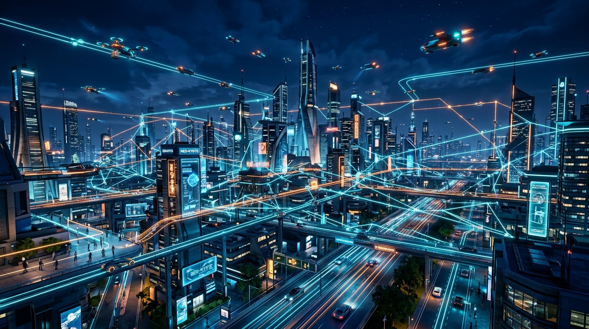
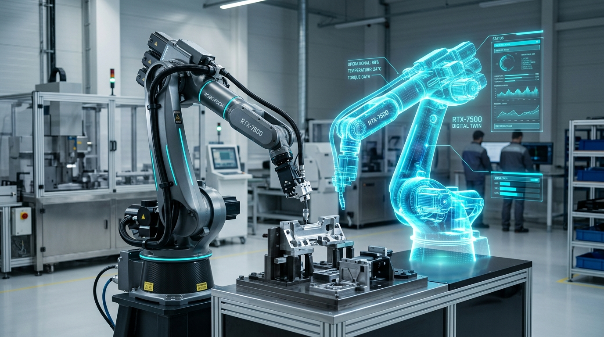

class: center, middle, inverse # อินเทอร์เน็ตของสรรพสิ่งและสถาปัตยกรรม IoT ## Internet of Things & IoT Architecture ### รายวิชา เทคโนโลยีดิจิทัลสำหรับวิศวกรรม **(Digital Technology for Engineering)** ??? กล่าวต้อนรับผู้ฟัง และแนะนำตัว ชี้แจงเป้าหมายของการบรรยายในวันนี้คือการทำความเข้าใจว่า IoT คืออะไร มีวิวัฒนาการมาอย่างไร และโครงสร้างพื้นฐานที่ทำให้ระบบ IoT ทำงานได้นั้นมีอะไรบ้าง รวมถึงการประยุกต์ใช้ในงานวิศวกรรม --- # บทนำ - IoT คืออะไร? - **ความหมาย:** อุปกรณ์ทางกายภาพทุกชนิด ที่สามารถ "เชื่อมต่ออินเทอร์เน็ต" เพื่อเก็บ แลกเปลี่ยน และสั่งการอัตโนมัติ - **Kevin Ashton (1999):** ผู้บัญญัติคำว่า "Internet of Things" จากแนวคิดการใช้ RFID ติดตามสินค้า - **หลักการ Everything is Connected (3 มิติ):** 1. **Any Thing:** อุปกรณ์ทุกประเภท 2. **Any Place:** ทุกสถานที่ (บ้าน โรงงาน พื้นที่ห่างไกล) 3. **Any Time:** ตลอดเวลา 24 ชั่วโมง แบบเรียลไทม์ ??? IoT ไม่ใช่แค่คอมพิวเตอร์หรือมือถือ แต่รวมถึงเซนเซอร์ มอเตอร์ เครื่องจักร หรือแม้แต่หลอดไฟที่เชื่อมต่ออินเทอร์เน็ตได้ การที่ทุกสิ่งเชื่อมต่อกันได้ทุกที่ทุกเวลา ทำให้เราสามารถมอนิเตอร์และควบคุมทุกอย่างได้แบบ Real-time --- # พัฒนาการของ IoT - **1990s (Internet):** คนสื่อสารกับคน (Web, Email) - **2000s (M2M):** เครื่องจักรสื่อสารกันเองผ่านเครือข่ายเฉพาะวงปิด - **2010s (IoT):** อุปกรณ์เชื่อมต่ออินเทอร์เน็ตสาธารณะ ประมวลผลบน Cloud (Smart Home) - **ปัจจุบัน (IIoT - Industrial IoT):** เน้นความปลอดภัย ความหน่วงต่ำ ทนทาน และใช้ในระดับอุตสาหกรรม (Smart Factory) ??? เทคโนโลยีค่อยๆ พัฒนาจากการคุยกันระหว่างมนุษย์ มาเป็นเครื่องจักรคุยกันเองในวงแคบๆ (M2M) จนกระทั่งอินเทอร์เน็ตและ Cloud ราคาถูกลง จึงเกิดเป็นยุค IoT และสำหรับวิศวกร เราจะโฟกัสที่ IIoT หรือ IoT สำหรับอุตสาหกรรมที่ต้องมีความน่าเชื่อถือและแม่นยำสูง --- # สถาปัตยกรรม IoT 4 ชั้น (4-Layer Architecture) - **ชั้นที่ 4: Application Layer:** แดชบอร์ด แอปพลิเคชัน แสดงผลให้ผู้ใช้งาน - **ชั้นที่ 3: Processing/Cloud Layer:** การจัดเก็บ วิเคราะห์ บิ๊กดาต้า - **ชั้นที่ 2: Network Layer:** Wi-Fi, 5G, LoRaWAN (เส้นทางขนส่งข้อมูล) - **ชั้นที่ 1: Perception Layer:** เซนเซอร์, แอคทูเอเตอร์, โลกกายภาพ *(ข้อมูลวิ่งจากชั้นที่ 1 ขึ้นไปยังชั้นที่ 4)* ??? การทำความเข้าใจ IoT ต้องมองเป็นระบบเลเยอร์ ข้อมูลเริ่มต้นจาก Perception Layer (เซนเซอร์) วิ่งผ่าน Network (อินเทอร์เน็ต) ไปยัง Cloud เพื่อประมวลผล และสุดท้ายแสดงให้ผู้ใช้เห็นผ่าน Application --- # การไหลของข้อมูล (Data Flow) **ขาขึ้น (Telemetry):** - สัญญาณอนาล็อก (Physical) ➡️ ดิจิทัล (MCU) ➡️ JSON/MQTT (Network) ➡️ InfluxDB/Dashboard (Cloud/App) <br> **ขาลง (Control/Feedback):** - คลิกปุ่มบน Dashboard ➡️ ส่งคำสั่งลงมา ➡️ MCU แปลงเป็นกระแสไฟฟ้า ➡️ มอเตอร์ทำงาน (Actuator) ??? ข้อมูลใน IoT ไม่ได้มีแต่ส่งขึ้นไปดูอย่างเดียว แต่เป็น Two-way communication เมื่อเราเห็นกราฟอุณหภูมิสูงเกินไป เราสามารถสั่งการลงมาเพื่อเปิดพัดลมหรือปิดวาล์วได้ทันที --- # Edge Computing vs Cloud Computing **Edge Computing (หน้างาน):** - ความหน่วงต่ำมาก (1-10 ms) เรียลไทม์ - ประหยัด Bandwidth - ทำงานออฟไลน์ได้ **Cloud Computing (ส่วนกลาง):** - ประมวลผลและเก็บข้อมูลได้ไม่จำกัด - ใช้รัน AI Model ขนาดใหญ่ - พึ่งพาอินเทอร์เน็ตตลอดเวลา ??? ในงานอุตสาหกรรม เราไม่สามารถพึ่งพา Cloud ได้ 100% เพราะถ้าเน็ตหลุด เครื่องจักรจะพังไม่ได้ ดังนั้นงานควบคุมที่ต้องไวมากๆ (เสี้ยววินาที) เราจะประมวลผลที่ Edge (ขอบเครือข่าย) และส่งเฉพาะข้อมูลสรุปขึ้น Cloud --- # องค์ประกอบ 7 ส่วนของระบบ IoT 1. **Sensor:** อุปกรณ์รับรู้ (เช่น อุณหภูมิ, ความสั่น) 2. **Actuator:** อุปกรณ์ตอบสนอง (เช่น มอเตอร์, รีเลย์) 3. **MCU:** สมองกลส่วนหน้า (ESP32, Arduino) 4. **Gateway:** จุดเชื่อมต่อ/ล่ามแปลภาษา 5. **Network:** โครงข่าย (Wi-Fi, LoRa) 6. **Cloud:** เซิร์ฟเวอร์ส่วนกลาง 7. **Application:** หน้าจอปฏิสัมพันธ์ (Grafana, LINE Notify) ??? ถ้าขาดชิ้นใดชิ้นหนึ่งไประบบอาจทำงานไม่ได้อย่างสมบูรณ์แบบ ทั้ง 7 องค์ประกอบนี้คือสิ่งที่วิศวกร IoT ต้องออกแบบให้สอดคล้องกัน --- # รูปแบบข้อมูลที่นิยมใช้ (JSON Payload) อุปกรณ์ IoT สื่อสารกันด้วยรูปแบบ JSON ซึ่งจัดเป็นโครงสร้างที่เรียบง่าย ```json { "device_id": "PUMP-01", "temperature": 68.3, "vibration": 4.12, "status": "WARNING" } ``` - **เบา อ่านง่าย:** เป็นมาตรฐานหลักที่มนุษย์และคอมพิวเตอร์อ่านเข้าใจ - **ลดแบนด์วิดท์:** เหมาะสำหรับส่งผ่าน MQTT Protocol ??? นี่คือหน้าตาของข้อมูลที่วิ่งอยู่ในสายอากาศและระบบเครือข่าย เรียกว่า JSON มันมีโครงสร้างที่เป็นระเบียบ (Key-Value) ทำให้เซิร์ฟเวอร์แยกแยะข้อมูลอุณหภูมิและความสั่นสะเทือนได้ง่าย --- # การประยุกต์ใช้ IoT ทางวิศวกรรม **โรงงานอัจฉริยะ (Smart Factory):** - ติดตามสายการผลิต ลดของเสีย ปรับกระบวนการอัตโนมัติ <br> **การบำรุงรักษาเชิงพยากรณ์ (Predictive Maintenance):** - ตรวจจับความสั่น/ความร้อนก่อนที่ตลับลูกปืน (Bearing) 지정จะพัง - **ผลลัพธ์:** ลด Downtime ได้ 30-50% และลดงบซ่อมบำรุงได้มหาศาล ??? แทนที่เราจะรอให้เครื่องจักรพังแล้วค่อยซ่อม (Reactive) หรือซ่อมตามรอบเวลาทั้งที่ยังไม่พัง (Preventive) เราใช้เซนเซอร์ IoT จับชีพจรเครื่องจักรตลอดเวลา ทำให้รู้ล่วงหน้าว่ามันกำลังจะพังและวางแผนซ่อมได้ตรงจุด (Predictive) --- # เทคโนโลยีเกิดใหม่: Smart City เมืองอัจฉริยะใช้ IoT ครอบคลุมทั้งเมืองเพื่อบริหารจัดการจราจร ขยะ และพลังงาน <p></p> ??? การประยุกต์ใช้ IoT ในระดับเมือง หรือ Smart City อุปกรณ์ทุกอย่างตั้งแต่เสาไฟ รถยนต์ไร้คนขับ และโดรน จะเชื่อมต่อกันเป็นโครงข่ายขนาดใหญ่เพื่อเพิ่มคุณภาพชีวิตของประชากร --- # เทคโนโลยีเกิดใหม่: AIoT & TinyML **AIoT (Artificial Intelligence + IoT):** - อุปกรณ์ไม่เพียงแค่ "เก็บและส่ง" ข้อมูล แต่สามารถ "คิดและตัดสินใจเองได้" ในระดับหนึ่ง - เช่น กล้องวงจรปิดที่ตรวจจับใบหน้าคนร้ายได้เองโดยไม่ต้องส่งวิดีโอขึ้น Cloud **TinyML (Tiny Machine Learning):** - การนำ AI โมเดลขนาดเล็กจิ๋ว ไปฝังไว้ในไมโครคอนโทรลเลอร์ (MCU) ที่กินไฟต่ำมาก - ทำให้เซนเซอร์สามารถแยกแยะเสียง ท่าทาง หรือความผิดปกติได้โดยไม่ต้องพึ่งพาอินเทอร์เน็ต ??? AIoT เป็นการยกระดับ IoT ไปอีกขั้นด้วยความฉลาดของ AI และด้วยเทคโนโลยี TinyML เราสามารถทำให้ชิปตัวเล็กๆ ราคาหลักสิบหรือหลักร้อยบาท มีความสามารถในการประมวลผล AI ได้ ซึ่งจะเข้ามาเปลี่ยนวิธีการออกแบบฮาร์ดแวร์ในอนาคต --- # เทคโนโลยีเกิดใหม่: Digital Twin สร้างฝาแฝดดิจิทัลของเครื่องจักรในโลกเสมือนจริง ที่มีสถานะตรงกับเครื่องจักรจริง 100% <p></p> - **ประโยชน์:** จำลองการทำงานล่วงหน้า ทดสอบระบบก่อนลงทุนสร้างจริง ??? Digital Twin หรือ ฝาแฝดดิจิทัล คือการจำลองโลกกายภาพเข้าไปในโลกดิจิทัลแบบ Real-time วิศวกรสามารถใช้โมเดลสามมิติในการวิเคราะห์ ทดสอบ และคาดเดาความเสียหายของเครื่องจักรได้โดยไม่ต้องหยุดการทำงานของเครื่องจักรจริงในโรงงาน --- class: center, middle, inverse # สรุปและแบบฝึกหัด (Q&A) - IoT เชื่อมโยงโลกกายภาพกับโลกดิจิทัลเข้าด้วยกัน - สถาปัตยกรรม 4 ชั้นเป็นรากฐานของการออกแบบระบบ - การประยุกต์ใช้อย่าง Predictive Maintenance เปลี่ยนโฉมหน้าอุตสาหกรรม **Q&A / สั่งงานแบบฝึกหัดท้ายบท** ??? สรุปใจความสำคัญของวันนี้ และเปิดโอกาสให้นักศึกษาซักถามข้อสงสัย พร้อมมอบหมายแบบฝึกหัดท้ายบทเพื่อให้ไปทดลองออกแบบระบบ IoT ด้วยตนเอง